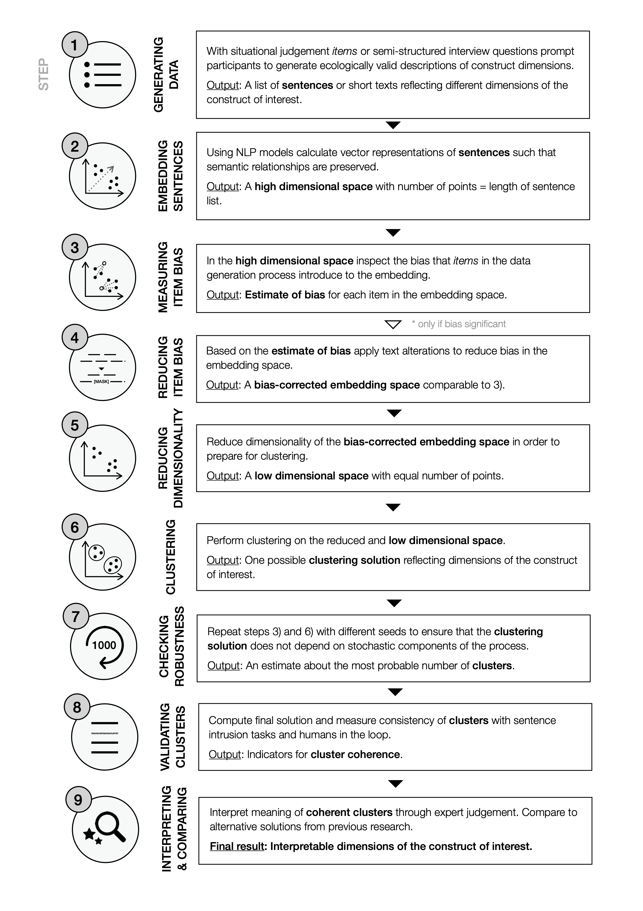
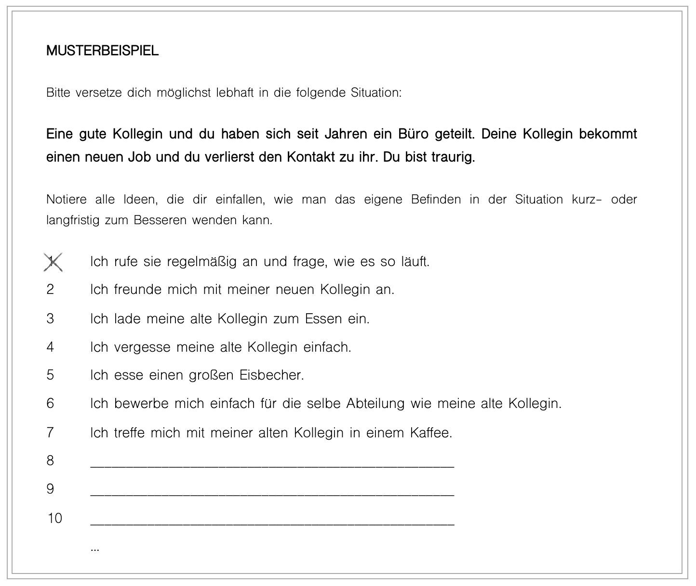

A new method to infer classes of psychological constructs from text
Which approach to theory building and measurement do you prefer?
Psychologists refer to themselves as being quantitative or qualitative researchers. When attempting to define psychological constructs, the quantitative approach usually builds questionnaires based on experts' understanding of the construct, which are then validated through factor analyses and correlational studies. On the other hand, the qualitative approach includes interviews or other forms of text collection and in-depth thematic analyses.
Both the quantitative and qualitative approach have advantages and disadvantages.
Both approaches have their advantages and disadvantages. Especially, the quantitative approach is structured, but questionnaires are noisy and experts' definitions of constructs might be incomplete. The qualitative approach uses rich data, but lacks transparency, replicability and generalisability.
A hybrid approach to theory building: The Construct Mining Pipeline
We introduce the Construct Mining Pipeline to infer the structure of psychological constructs. It is supposed to combine advantages and mitigate disadvantages of both the quantitative and qualitative approach. It builds on semi-structured text data and uses structured data processing methods from computer science to provide greater transparency, replicability and scalability, while preserving the richness of text data.
The Construct Mining Pipeline involves nine steps.
Feel free to explore the Construct Mining Pipeline in short through the illustration below. For more detail, please refer to our preprint or try it out using our repository.

Demonstrating the pipeline: What emotion regulation strategies are there?
Over the past 20 years research has accumulated considerable knowledge on a multitude of emotion regulation (ER) strategies in terms of their effects on psychological health, overall well-being and social functioning. Experiments provided evidence for generally beneficial or harmful strategies. Questionnaires to assess emotion regulation have been developed. Plus, there is some very well acknowledged theory.
Nobody ever asked what emotion regulation strategies are actually existing.
Despite all evidence on ER strategies, we still don't know what exactly constitutes successful emotion regulation. This is partly due to a fragmented understanding of the overall ER strategy pool. In experiments some strategies are overstudied, while some are neglected. Questionnaires often seem to cover an arbitrary number of strategies. And theories are usually too broad in order to be informative for the prediction of outcome variables.
In this application, we derive an ER strategy classification system from descriptions of people's actual ER attempts.
A more ecologically valid measure of emotion regulation behavior

By nature, it is hard to measure ER attempts, because they happen constantly and cannot necessarily be observed. Experience sampling is expensive and restricts participants in their answers. Instead our method is based on textual data, a dataset that consists of sentences, each sentence describing one emotion regulation strategy (for example: I call a friend and ask for help.).
What would you do to make yourself feel better?
In order to obtain these strategy descriptions, we are asking people to imagine being in an emotional situation and write down as many ideas as possible to make themselves feel better in a limited amount of time. See the picture on the left for an example item of the questionnaire.
Deriving strategy classes using the Construct Mining Pipeline

We use a pipeline of sentence embeddings, dimension reduction and
clustering algorithms to obtain a landscape of emotion regulation
strategies (see image on the right). Similar strategy descriptions
are grouped together in the sentence embedding space making up a strategy cluster. The
taxonomy is validated with robustness checks and a human-in-the-loop approach.
Explore ER stratgy landscape